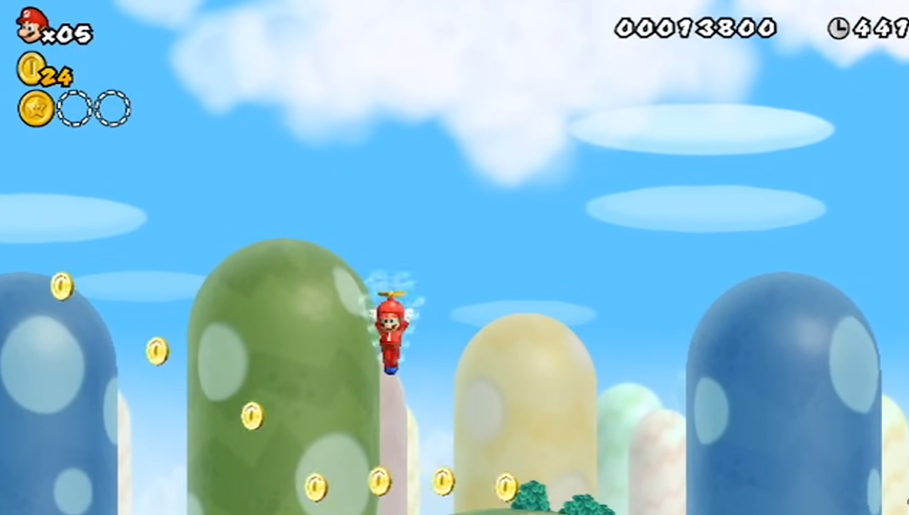

Movimientos
Salto de pared:
Con este movimiento, puedes saltar y rebotar en las paredes. Para realizarlo, salta hacia una pared. Al tocarla, pulsa las flechas de movimiento hacia la pared y rápidamente, pulsa el botón de salto para rebotar. Si estás en un sitio donde haya dos paredes cercanas, lo puedes repetir hasta llegar a la parte más alta.

Salto con giro:
Para realizar este movimiento, tienes que agitar el mando de Wii cuando Mario esté en el aire. Se suele utilizar cuando te quedas corto en un salto, ya que si lo haces al final, recorrerás algo más de distancia.

Salto de helicóptero:
Para realizar este movimiento tienes que haber agarrado un champicóptero o un bloque helicóptero. Cuando estés en el aire, agita el mando de Wii y tu personaje volará hasta lo alto de la pantalla y después caerá planeando.

Descenso de helicóptero:
Después de realizar el salto de helicóptero, puedes caer en forma de torbellino pulsando la flecha de control hacia abajo. Solo caerás mientras mantengas este botón pulsado, si lo sueltas, volverás a planear.

Bola de hielo:
Solo puedes lanzar bolas de hielo para congelar a los enemigos si llevas el traje polar o si has agarrado flor de hielo. Para lanzar las bolas de hielo, tienes que pulsar el botón de disparo (es el botón "2"). En el caso de tener conectado el Nunchuk, el botón de disparo, será el botón "B".

Bola de fuego:
Para poder lanzar bolas de fuego que quemen a los enemigos o derritan bloques de hielo, tienes que haber agarrado la flor de fuego. Para lanzar las bolas de fuego, tienes que pulsar el botón de disparo (es el botón "2"). En el caso de tener conectado el Nunchuk, el botón de disparo, será el botón "B".

Deslizamiento Polar:
Este movimiento solo lo podrás realizar si has agarrado el traje polar. Para realizarlo, tienes que correr y pulsar la flecha de control hacia abajo cuando tomas velocidad. Una vez te estés deslizando, avanzarás más rápido y podrás dar saltos más largos.

Capacidad Flotante:
Con este movimiento podrás caminar sobre el agua, pero solo lo podrás hacer si has agarrado un mini champiñón para hacerte pequeño. Si mantienes el botón de correr pulsado podrás caminar sobre el agua, pero si te paras te hundirás.

Salto Bomba:
Para realizar este movimiento, tienes que saltar y cuando estés en el aire, tienes que pulsar la flecha de control hacia abajo. Al hacerlo, caerás con fuerza y podrás eliminar a los enemigos, o si tienes el poder Super podrás romper bloques.

Levantar y tirar objetos:
Para levantar un objeto, tienes que colocarte a su lado, pulsar el botón "1" y sin soltarlo agitar el control de Wii (si tienes el Nunchuk conectado, en lugar del botón "1", tendrás que pulsar el botón "B"). Cuando tengas un objeto agarrado, lo mantendrás sobre ti hasta que no sueltes el botón "1", si lo sueltas lo lanzarás.

Levantar y tirar jugador:
Este movimiento solo se puede realizar si estás jugando en el modo de dos o más jugadores. Para levantar a un jugador, se hace de la misma forma que para agarrar un objeto, es decir, pulsando el botón "1" y sin soltarlo agitando el control de Wii (si tienes el Nunchuk conectado, en lugar del botón "1", tendrás que pulsar el botón "B"). Cuando tengas a un jugador sobre ti, lo mantendrás cogido hasta que no sueltes el botón "1", si lo sueltas lo lanzarás.

Salto Cooperativo:
Este movimiento solo se puede realizar si estás jugando en el modo de dos o más jugadores. Para realizarlo, tienes que saltar y rebotar sobre uno de tus compañeros. Al hacerlo, alcanzarás mayor altura que con un salto normal.

Salto Bomba Sincronizado:
Este movimiento solo se puede realizar si estás jugando en el modo de dos o más jugadores. El movimiento es el mismo que el salto bomba, pero lo tienes que realizar dos o más jugadores a la vez. El efecto será más potente y eliminarás a todos los enemigos que estén tocando el suelo.

Control Normal
Posicion correcta del mando antes de jugar.

| Nombre | Funcionamiento |
|---|---|
| Flecha arriba | Se usa para moverte por los menús, por los mapas y para hacer que tu personaje se meta por las tuberías que están en el techo. |
| Flecha de Izaquierda y Derecha | Con estos botones moverás a tu personaje a izquierda y derecha cuando estés jugando. También lo usarás para moverte por los mapas. |
| Flecha abajo | Se usa para moverte por los menús, por los mapas y para hacer que tu personaje se meta por las tuberías que están en el suelo. |
| Boton A | Púlsalo en el mapa de cualquier mundo para "recorrer el mapa". De esta forma, podrás ver el mapa completo sin mover a Mario. También se usa para confirmar en los menús. |
| Boton B | No se usa. |
| Boton 1 | En el interior de una fase se usa para disparar y si lo dejas pulsado para correr. Pulsándolo en el mapa de un mundo, hace aparecer el menú de objetos. |
| Boton 2 | En el interior de una fase se usa para saltar. También se usa para confirmar en los menús. |
| Boton de (+) | Pulsándolo en el interior de una fase, hace aparecer el menú de pausa. Pulsándolo en el mapa de un mundo, hace aparecer el menú del mapa. |
| Boton de (-) | Pulsándolo en el mapa de un mundo, hace aparecer el menú de selección de mundo. |
Contro de Wii con extencion Nunchuk
Posicion correcta para juagar (Nesesario conectar el Nunchuk al puerto de entrada del control Wii).

| Nombre | Funcionamiento |
|---|---|
| Stick del Nunchuk | Se usa para mover a tu personaje por las fases y en los mapas. También se usa para moverte por los menús. |
| Control Z | Manteniéndolo pulsado dentro de una fase, se usa para correr. |
| Control C | Púlsalo en el mapa de cualquier mundo para "recorrer el mapa". De esta forma, podrás ver el mapa completo sin mover a Mario. |
| Flechas del control de Wii | Tiene la misma función que el Control Stick. Pero lo lógico es no usarlo ya que es más cómodo usar el Control Stick del Nunchuk |
| Boton A | En el interior de una fase se usa para saltar. También se usa para confirmar en los menús. |
| Boton B | En el interior de una fase se usa para disparar y si lo dejas pulsado para correr. Pulsándolo en el mapa de un mundo, hace aparecer el menú de objetos. |
| Boton 1 | Pulsándolo en el mapa de un mundo, hace aparecer el menú de objetos. |
| Boton 2 | Se usa para confirmar en los menús. |
| Boton (+) | Pulsándolo en el interior de una fase, hace aparecer el menú de pausa. Pulsándolo en el mapa de un mundo, hace aparecer el menú del mapa. |
| Boton (-) | Pulsándolo en el mapa de un mundo, hace aparecer el menú de selección de mundo. |